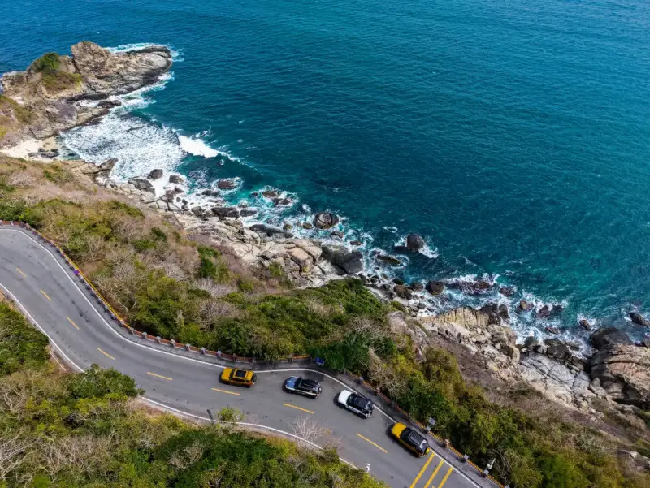
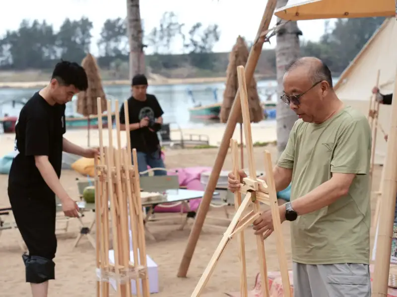
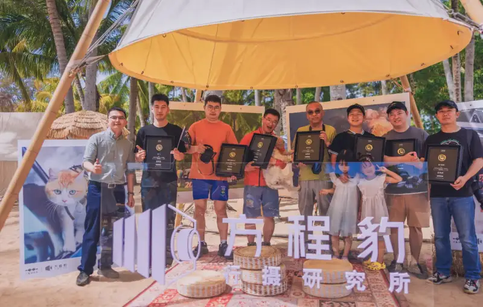

When the wheels pick up the rhythm of the sea breeze, the lens finds a breathing beat. On March 1, 2025, the Fangchengbaoannual photo drivecompetition January themed month award ceremony was held in Lingshui, Hainanand closed successfully.With New Year Atmosphere as the theme,11award-winning photographersattended the ceremonywithFangchengbao. Along the way, amidHainanblue sea and sky, they used light to weave an island story of freedom andexplorationon the islands.
Photo Drive Together: A Journey to the Hainan Islands
On February 25,a neat line of Fangchengbao vehicles cut through the dawn sky over Yalong Bay。5Bao 5 owner photographers drove their cars and began a four-day, three-night photo drive together. From the roar of gathering at Sanya Yalong Bay, to the rush along the Sun Bay road that runs with the sea; from the crunch of leaves under the wheels deep in the Mount Diaoluo rainforest, tothe Tanka fish raftswhere the car's silhouette answered the mountain and sea. The Bao 5, onHainanground, sparked a uniqueislandstory.
WhenFangchengbaoYunian-P chassis handled the wet rainforest roads with ease, and the quiet of the DMO hybrid off-road platform let photographers catch fishing boats slicing the morning mist at Monkey Island. When the car became a mobile photo platform, the tough boxy shape and the rocky shore of Clear Water Bay struck up a geometric dialogue, mergingwonderfully in the frame。

Award Ceremony: witnessedin the morning lightwithand sea breeze
On March 1, Fangchengbao redefined the sense of ceremony. There was no stiff traditional stage. Instead, a car-formation on the sand formed an open-air theater.After returning from pulling in their crab cages, the photographers and staff, loaded with a catch, set up the ceremony site together. They gave free rein to their ideas and built an award ceremony that was their own.

WhenLu Lu Ziye, first-prize winner in the photo categoryreceived themedal，Shesaid: “I am usually busy, and only near the end of this competition did I have time to take my child camping and taking photos. The camping leveling mode and the external power output of Fangchengbao let me travel easily with my child and camp with ease.”Everyone felt the same. At the barbecue lunch, the photographers enjoyed the grill and the catch, and savored the taste of a good harvest.

Go Out, and the World Becomes the Lens's Partner
“With Fangchengbao, I unknowingly bought a lot of gear, cameras, drones and more. When I see a beautiful view, I cannot help but record it.”said the host, @Shenbi Aliang, at the award event.Fangchengbao is the photographer's best partner. Its strong off-road abilitylets photographers drive to untouched shooting spots;The 6 kW external power output means food, drink, and shelter are no worry. The one-tap camping leveling faces any terrain. And there is the now-released Bao 8 drone edition…The so-called atmosphere is, at its core, freedom backed by technology.
From the snow fields of Changbai Mountain to theHainancoast, the Fangchengbao photo drive research group believes this: the beauty of the world always shares its secrets with those who dare to set out. WhenFangchengbaotire tracks become a new coastline, and when the lens freezes not only scenery but the courage to cross boundaries, that is the fullest answer to going out and seeing the world.